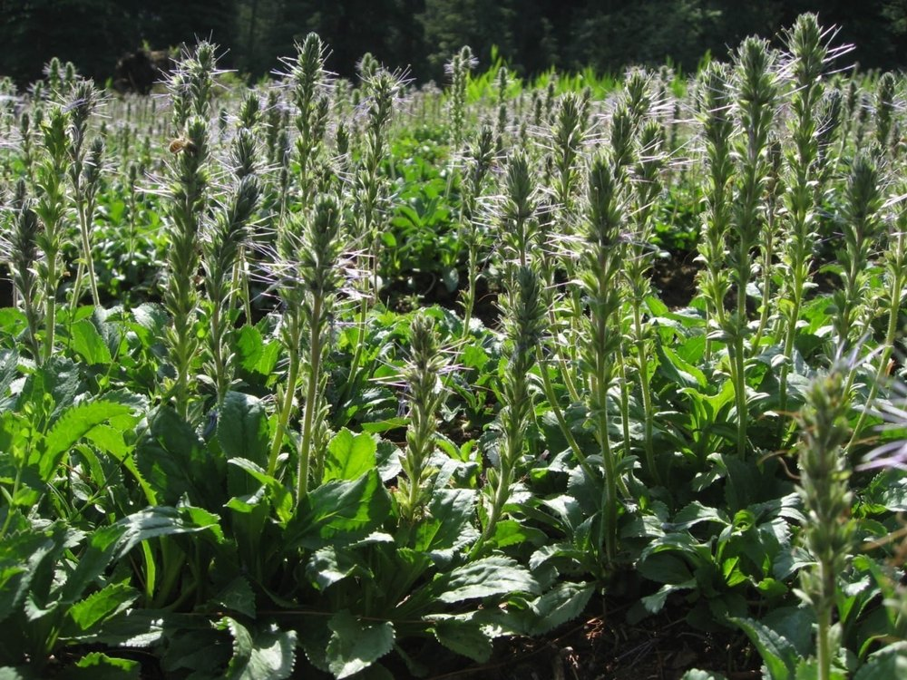
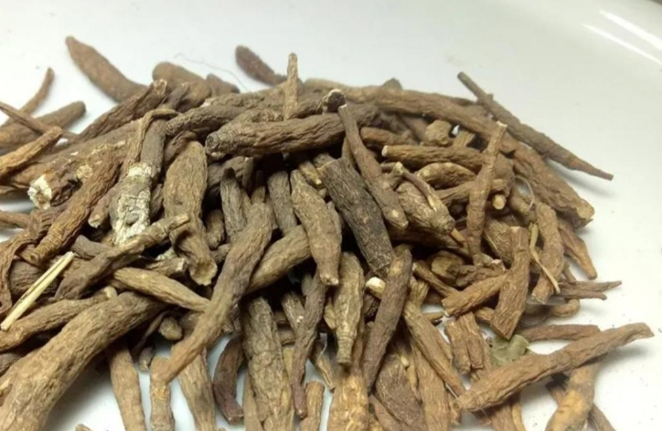
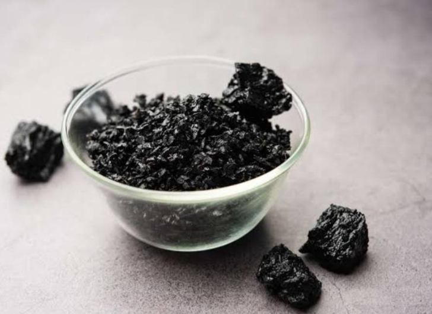

Introduction
“Buy handmade, Be one in a million, not one of millions”. This quote highlights how important it is to buy local items. Buying locally strengthens the labour force, increases the financial condition of those areas, and boosts the fabric of humanity and brotherhood. The Himalayas are the roof of the world. If we don't support and build the roof strongly, our house becomes incomplete. The Himalayas is an amazing and unique place that has local herbs, local handicrafts and local sustainable products. Let us see all the local products and why should we buy them.
Local Herbs
- Kutki:
The scientific name of this plant is Picorhiza Kurroa. Kutki is a small perennial herb, which grows at a height of 20 to 30 cm. Kutki is generally found in higher mountain elevations of the himalayan range. The main useful part of this plant is the root part, which tastes bitter. The root of the plant is anti-bacterial by nature. The plant also promotes elimination of excess fat and cholesterol, boosting overall mechanism. This plant has also ayurvedic implications such as Yakrit Vikara, Kamala and Kasahara.
This plant is sold as dried roots, powder or extracts in capsules.
 - Ashwagandha:
Perhaps, all of us are habituated with his name. This is a very useful herb found in the Himalayas. This herb contains chemicals that reduce blood pressure, anxiety, insomnia and stress. It also helps to improve sleep and reduce stress related weight gain.
It is sold in the form of root powder, capsules and extracts.

- Ginseng:
Ginseng is a very useful herb found in the Himalayas. This herb helps to boost the immune system, regulate blood sugar levels, improve focus, reduce inflammation and menopausal symptoms.
It is also sold in the form of root powder, capsules and extracts.
- Atish:
Atish, also known as Ativisha, is a tall herb mainly grown in the Himalayan region. Atish is effective in maintaining a healthy digestive system. It is also helpful in diarrhea as it inhibits the growth of pathogenic microorganisms due to its antibacterial activity. Atish might also aid in weight loss as it lowers the levels of triglycerides and increases levels of HDL- cholesterol (“good cholesterol”). The roots of Atish can be inhaled for managing severe headaches or migraines.
Atish is sold in the form of dried roots and powder.
 - Shilajit
Shilajit is a sticky substance that comes out of the cracks in high mountain ranges of Asia. It typically contains vitamins, minerals, essential fatty acids, and amino acids. It also contains the organic acids fulvic acid and humic acid. Shilajit is used for Alzheimer disease, athletic performance, male infertility and good muscle strength.

Local Handicrafts
- Pashmina Shawls:
It is a luxury shawl originated in Ladakh from the changthangi goat. Pashmina is known for its exceptional softness and warmth due to its fine fiber diameter (12 to 21 microns). Pashima is now the flag bearer of the brand of shawls.
- Kullu, Kinnauri Shawls and Chamba Rumal
These are all local high quality textile based handicrafts from Himachal Pradesh. After the sheep is sheared, its wool is washed and dried. Combing is done with wooden combs. During leisure, especially in winter when there is no agricultural work, families spin wool on ‘takli’, a local spindle which later banuras or julahas weave on traditional looms. Kinds of yarn used to manufacture the Shawls are local wool, Merino wool, Angora, Pashmina, synthetic yarn, cotton, and Yak wool. The fabric is also used to make Kullu caps, mufflers, dressing material with traditional Kullu patterns. Chamba Rumal is no ordinary item. This exquisite item is the result of impeccable needlework on khadar or muslin cloth, skillfully crafted by the queen and the royal ladies of Chamba during their leisure moments. These 'rumaals,' adorned with meticulous detailing and exquisite embroideries, served primarily as ornate coverlets for gifts during wedding ceremonies.
- Monpa Textiles
These are women by the monpa, a Buddhist tribe in Arunachal Pradesh. The wool was sourced from local sheep and yaks, hand-spun into fine threads, and dyed using natural extracts from indigo, turmeric, madder root, and bark-based pigments.
Each color and motif in a Monpa textile carries spiritual meaning:
- Red – Life and protection
- Yellow – Enlightenment and Buddhism
- Black – Strength and endurance
- White – Purity and peace
- Thulma and Pankhi:
These are textile handicrafts made in Uttarakhand. The thulma is a thick, heavy plain-weave blanket with a napped surface. The pankhi is a twill shawl and the pakhi is a thin, black shawl with geometric shapes. It is traditionally made from hand-spun local sheep's wool, which is washed using a natural detergent from the pangar fruit. Besides being used as a blanket, it can also serve as a heavy furnishing or a bed covering.
- Thangka Paintings:
These are paintings from the Himalayan regions of Ladakh, Sikkim and Arunachal Pradesh. Thangkas are religious painted scrolls depicting Buddhist deities, traditionally done on cloth. Over the years, techniques like embroidery and applique have been added. It mainly involves the use of cotton and silk.
- Aipan Art:
This is an art of the Himalayan state of Uttarakhand. Aipan is drawn on a smooth surface which is prepared using wet ochre mud. A white paste, known as bisvar, is made by grounding cooked rice in water. It is used to draw designs. It is sold on items like coasters and wall hangings.
- Bamboo, Cane Craft, Wooden Mask and Wood Carving:
Bamboo and cane crafts are predominant in the Himalayas, with some special varieties of crafts such as Boa hats, mugs and furniture. Wooden masks are specially made by the Monpa tribe of Arunachal Pradesh. Wood carving is popular in Uttarakhand as floral and geometric patterns are carved on the houses.
- Ringal Craft:
Ringal is a type of dwarf bamboo that grows in the Himalayan forests of Uttarakhand at high altitudes. The entire ringal is divided into small strips with varying lengths for the warp (lengthwise yarns) and weft (crosswise yarns). The craftsman skillfully blends light and dark ringal strips to create one-of-a-kind designs. The edges of the final product are smoothed by scraping.
- Mohra:
These are metal masks crafted in Himachal Pradesh. These ‘Mohras’ are metal plaques, primarily made from bronze, brass, or silver, that depict Hindu deities, warrior kings, and divine protectors. With time it gained ritualistic significance in temple traditions and religious ceremonies.
Conclusion
It also promotes our culture, fashion and moreover, acts as a great symbol for sustainability. Besides all this products like Apricot Kernel Oil, handmade soaps and hemp bags are also local products that can also be bought to promote sustainability.